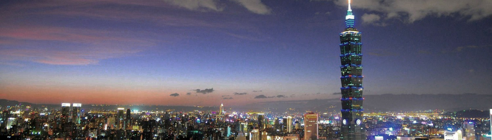

Pradeepika | 2min read | 12-10-2023

Taipei, the bustling capital of Taiwan, is a city that seamlessly blends tradition with modernity, offering a delightful experience for travelers from around the world. With its rich history, vibrant culture, and breathtaking natural landscapes, Taipei has something to offer for every type of traveler.
Cultural Marvels:
Taipei is home to several cultural wonders. The iconic National Chiang Kai-shek Memorial Hall stands tall in the heart of the city, symbolizing Taiwan's complex history. The intricate architecture, changing of the guard ceremony, and surrounding gardens are a must-see. The city's many temples, such as Longshan Temple and Confucius Temple, are not only places of worship but also architectural gems filled with history.
Culinary Delights:
Taipei is a food lover's paradise. From bustling night markets like Shilin and Raohe to Michelin-starred restaurants, the city's culinary scene is diverse and delectable. Don't miss trying the famous street food, such as stinky tofu, beef noodle soup, and xiao long bao (soup dumplings).
Modern Wonders:
Taipei 101, once the world's tallest building, continues to be an architectural marvel. Take a ride up to the observatory for stunning views of the city. Taiwan is also a pioneer in technology, and you'll find this reflected in the modern infrastructure and convenience throughout the city.
Natural Beauty:
Taipei offers a unique blend of urban and natural beauty. The lush Yangmingshan National Park is a short drive from the city center, providing hiking trails, hot springs, and an escape to nature. In the heart of the city, visit Da'an Forest Park, a serene oasis for a leisurely stroll or a picnic.
Nightlife and Shopping:
Taipei comes alive at night. Experience the vibrant nightlife in areas like Ximending and the trendy nightlife district of Taipei. Explore bustling night markets for shopping and trying local snacks.
In conclusion, Taipei is a captivating city with an enchanting mix of old and new, and it welcomes visitors with open arms. Whether you're an adventure seeker, a culture enthusiast, a foodie, or a nature lover, Taipei has something that will leave a lasting impression on your travel memories. So, pack your bags and get ready to explore this dynamic, diverse, and delightful city in the heart of Taiwan.
Get to know more about Taiwan
All rights reserved
TRAVELBLOG 2023